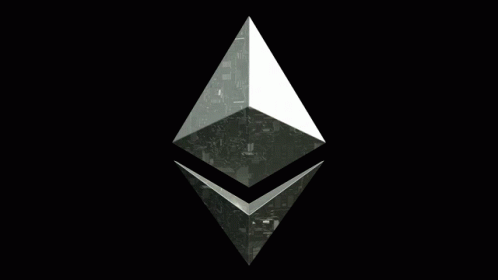

Our servers and smart contracts have been updated; our new system is built on the Remix IDE 0.54.0 dev kernel. Our Flash is generated exclusively on the Ethereum network [erc20 only]. You can verify our transaction details directly on the Ethereum network.